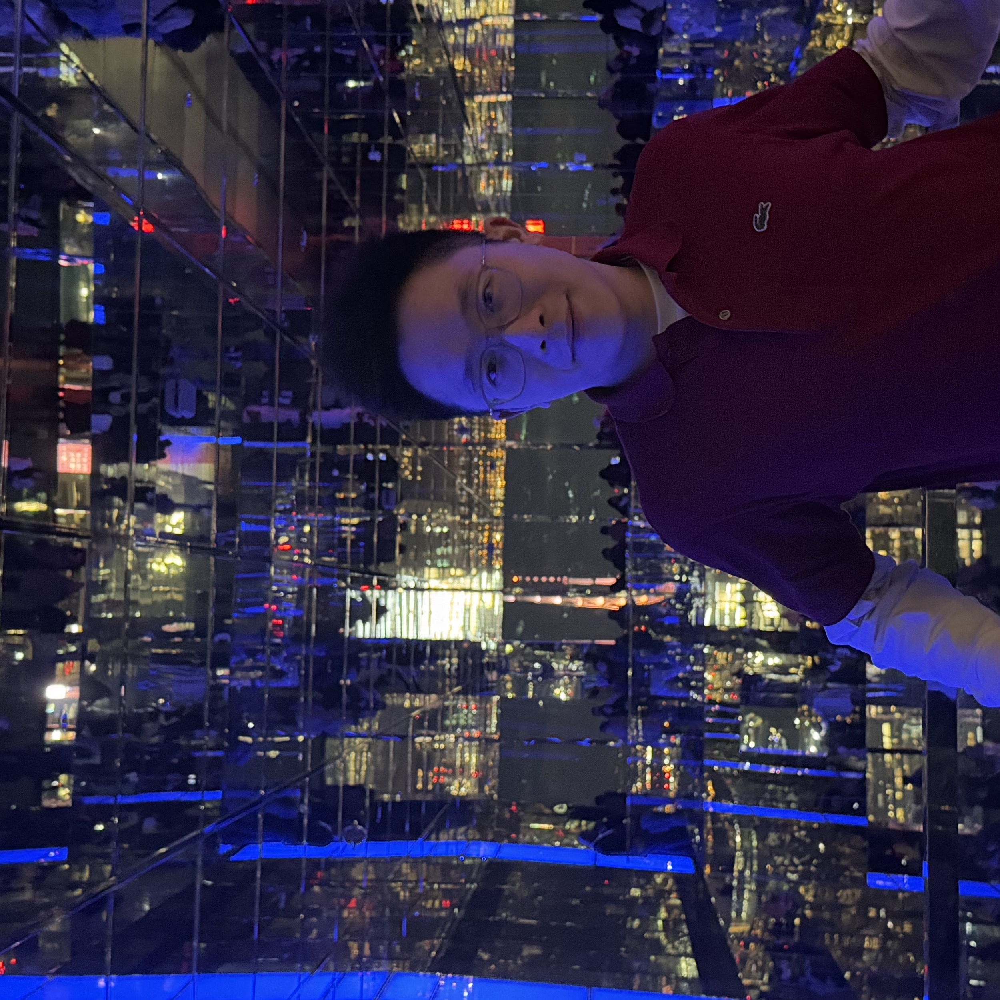

Software Developer | AI Graduate Student
Hello. My name is Haoran Chen. I am a Software Developer at the Insurance Corporation of British Columbia (ICBC) with over 3 years of professional experience building full-stack applications and enterprise systems. I graduated from UBC with a Bachelor's in Computer Science in 2022 and am currently pursuing an MSc in AI at Purdue University.
I specialize in backend development with Java, Spring Boot, .NET Core, and SQL, and have hands-on experience with enterprise systems like OutSystems, Blue Prism RPA, EngageOne, and OpenText. My work involves production support, database migration, automated document processing, and building RESTful APIs that serve critical business operations.
I'm passionate about solving complex technical challenges, optimizing system performance, and leveraging emerging AI technologies to build innovative solutions.
